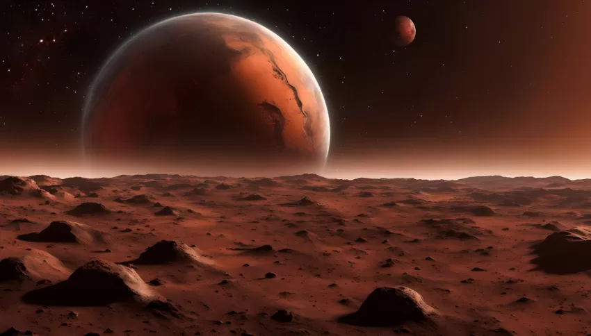
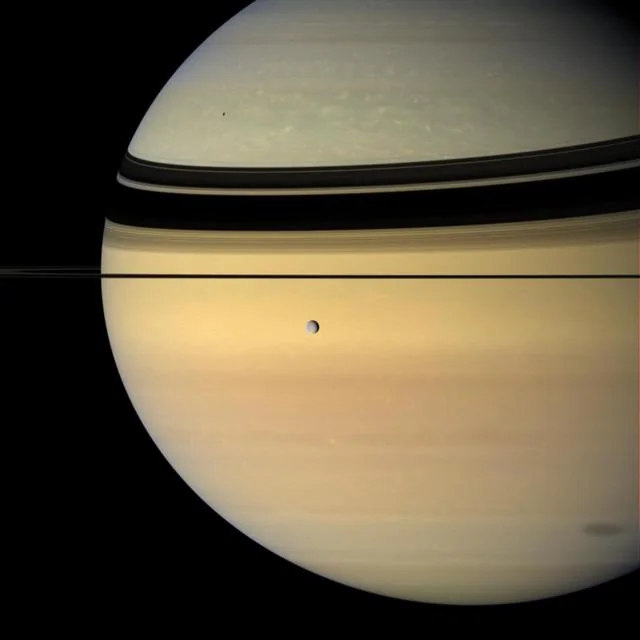
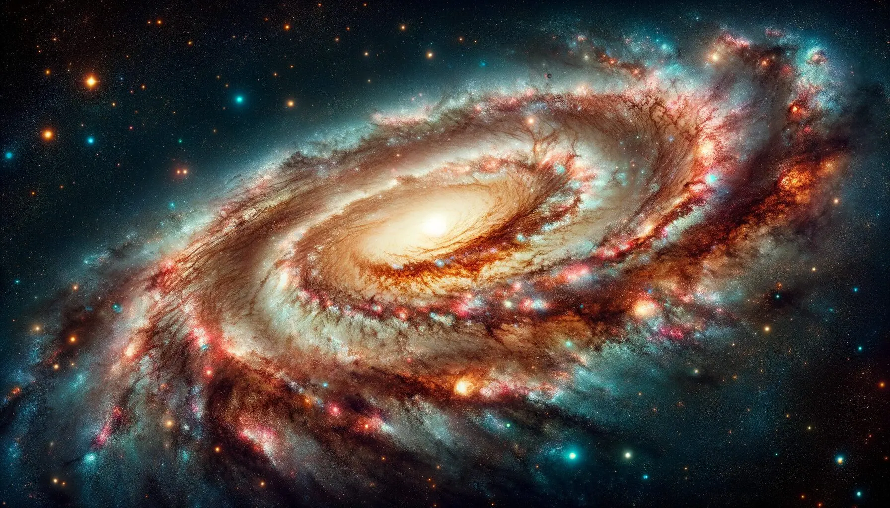
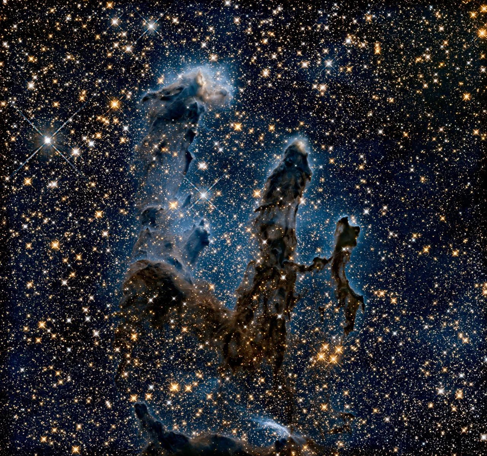

Storia di copertina
Marte non è soltanto il Pianeta Rosso
Vulcani giganteschi, canyon profondi e tracce di un passato più umido: una guida per leggere il pianeta che più di ogni altro alimenta l'immaginazione umana.
Il cosmo, raccontato bene.

Storia di copertina
Vulcani giganteschi, canyon profondi e tracce di un passato più umido: una guida per leggere il pianeta che più di ogni altro alimenta l'immaginazione umana.
Esplorazione
Il nostro quartiere cosmico spiegato attraverso paesaggi, numeri e domande concrete.

Giganti gassosi
Un mondo enorme, tempestoso e circondato da lune molto diverse tra loro.
Esplora Giove
Mondi ad anelli
I suoi anelli sono un sistema dinamico formato da innumerevoli frammenti.
Scopri SaturnoPercorso editoriale
8 pianeti
Dai mondi rocciosi ai giganti ghiacciati, ogni pianeta racconta una storia diversa.
Apri l'hub Sistema SolareOltre il vicinato
Grandi strutture cosmiche raccontate con una prospettiva umana e visiva.

Galassie
Un viaggio dal centro galattico ai bracci di spirale, fino alla periferia in cui si trova il Sole.
Leggi l'articolo
Nascita stellare
Sono laboratori naturali in cui gravità, gas e polveri costruiscono nuove stelle.
Leggi l'articolo
Guida pratica
Un metodo semplice per riconoscere Luna, pianeti e costellazioni senza partire da strumenti costosi.
Apri la guidaGuida pratica
Per cominciare a osservare il cielo non servono strumenti costosi: servono metodo, pazienza e buio.

Allontanati dalle luci dirette e lascia agli occhi almeno venti minuti per adattarsi.
Parti dalla Luna, dai pianeti più luminosi e da due o tre costellazioni stagionali.
Il cielo cambia con le ore e con le stagioni. La familiarità nasce dalla continuità.
Metodo editoriale
AstroBlog rielabora informazioni provenienti da agenzie spaziali e istituti scientifici, indicando con chiarezza il carattere divulgativo dei contenuti.
Scopri il progetto